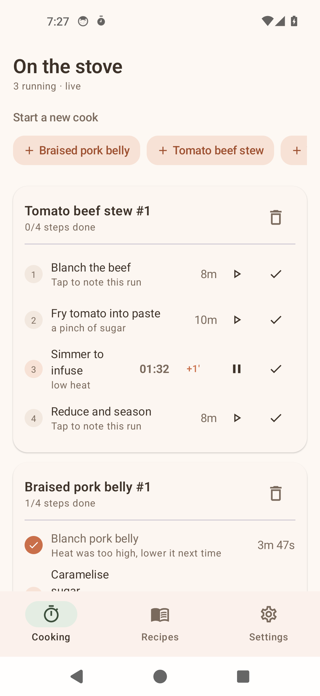
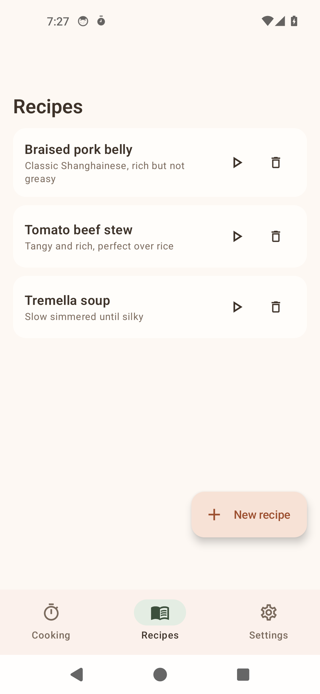
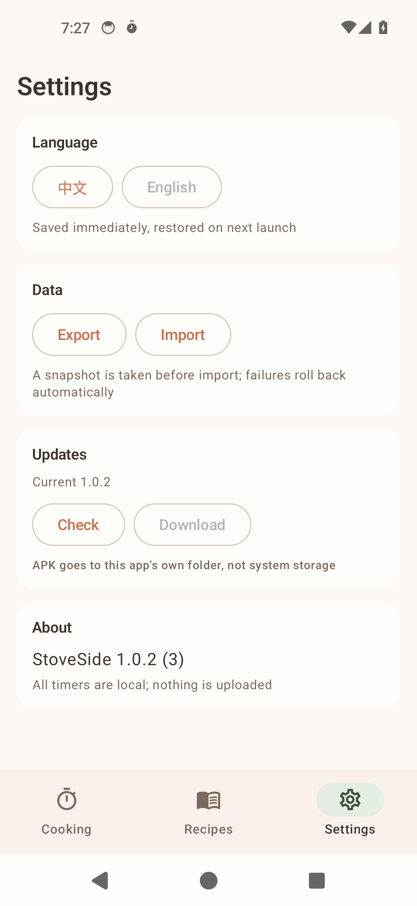

Parallel multi-flow timers
Run several cooking flows at once, each step with an independent countdown that never blocks the others. Remaining time is shown together, and alerts fire when a step is due.
StoveSide is built for the twenty frantic minutes of actual cooking: soup simmering, fish steaming, stir-fry on high heat and rice coming up — each step with its own timer, and whatever you jot down stays out of your recipes.
Not another recipe collection — it answers the question that matters mid-cook: how many minutes does this step still need?
Run several cooking flows at once, each step with an independent countdown that never blocks the others. Remaining time is shown together, and alerts fire when a step is due.
Heat level, a last-minute substitution, what to change next time — recorded on the step it belongs to, instead of held in your head.
A single recipe can open several cook instances at once, each tracking its own progress and notes — handy for two pots or for repeated test runs.
Paste a block of recipe text and it splits into steps by line breaks and numbering, so you never retype a recipe line by line.
The interface follows the system language and switches between Chinese and English — no need to change apps when you change languages.
The whole data set can be exported as a backup and restored after a reinstall, and new builds can be checked and installed from inside the app.
This is the core design of the app: a recipe template only answers "how is this dish made", every real cooking session opens a separate instance, and nothing changed in an instance ever writes back to the template.
Recipe → Step
The recipe template and its steps, reusable indefinitely and always left clean.
Recipe → Cook → CookStep
Each cooking session creates a Cook instance; step state and notes live on its CookSteps.
Notes stay in the instance
Instance notes never write back, so templates and instances evolve independently.
Cream base, clay orange and sage green, with quietly rounded cards.



Warm cream with clay orange as the primary; dark mode settles into deep clay black.
Download the latest APK from GitHub Releases and install it directly. Installing over an existing version keeps your data.